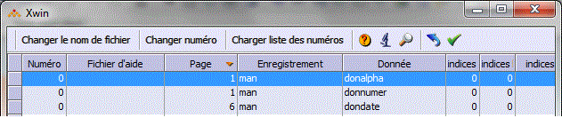
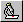

Cette boîte de dialogue vous permet de saisir rapidement les paramètres des aides.
La saisie des aides peut être appelée pour la page courante ou pour tout le masque. Dans ce dernier cas, la liste des données en saisie de tout le masque vous est présentée :

La liste montre toutes les données en saisie. Attention, une donnée peut se trouver dans plusieurs pages du masque. Dans ce cas, elle n'est présentée qu'une seule fois dans le tableau, mais la modification de cette ligne du tableau sera reportée dans les autres pages.
Le tableau
Le tableau est l'objet tableau de Xwin. Toutes les manipulations sont donc les manipulations standard de l'objet tableau. Le clic dans une entête de colonne provoque le tri du tableau sur cette colonne.
Lors du déplacement et de la sélection dans les lignes du tableau, les poignées sont placées dans le masque sur les objets sélectionnés.
Bouton Changer le nom de fichier
Ce bouton vous permet d'affecter un nom de fichier d'aides à toutes les lignes sélectionnées. Pour dégriser ce bouton, vous devez donc sélectionner plusieurs lignes du tableau.
Bouton Charger Liste des numéros
Le compilateur d'aides génère un fichier ".hpj" qui contient la liste des aides du fichier. Vous pouvez charger ce fichier et par la suite le consulter par la frappe de F8 ou le bouton zoom.
Dans la boîte de consultation des aides, la frappe de F12 ou le bouton Renvoyer vous permet de retourner le numéro d'aide.
Voir l'aide
Le double clic sur une ligne ou le bouton

vous permet d'afficher l'aide, que vous soyez dans la liste des données ou dans la liste des aides.Restriction :
Xwin ne sait pas visualiser les aides au format WebHelp (format obligatoire en mode client léger).
Vous pouvez néanmoins continuer à utiliser cette fonctionnalité en phase de développement des aides, à condition d'effectuer une génération provisoire au format HTML Help (.chm), utilisable dans Xwin.